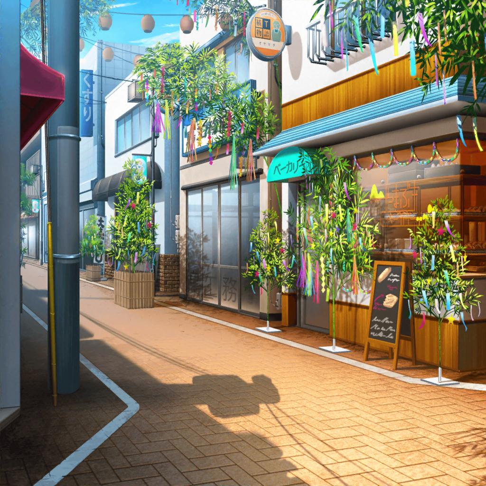
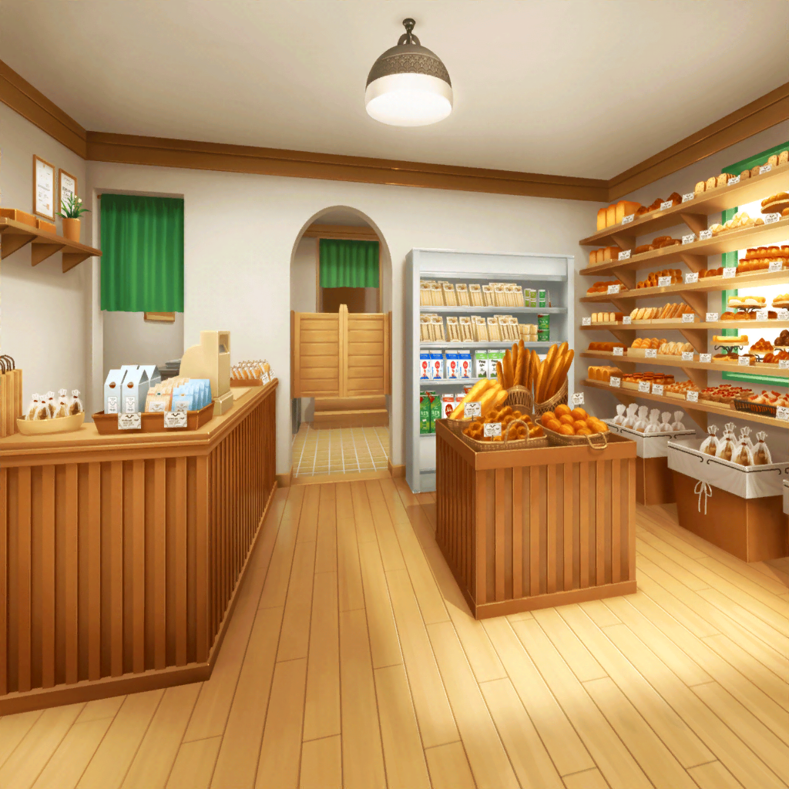

放課後
商店街
香澄
でねでね！
この間の公園探しの旅のことをおたえに話したら、
おたえのオススメの公園を教えてもらったんだ！
香澄
おたえはいつもそこで、飼ってるうさぎを
遊ばせてるんだって！
はぐみ
えー、それ楽しそう！
はぐみも、うさぎさんと遊びたいなー！
香澄
でしょ？ それじゃあ、今度おたえと一緒に行ってみよう！
はぐみ
うんっ！ 楽しみだなー！
はぐみ
やっぱり、かーくんと一緒にいると、とっても楽しいな～！
香澄
私もだよ、はぐっ！
こうやってまた会えたのも、
子供のころ、七夕の短冊にお願いしたからだね！
はぐみ
うん、絶対そうだよ！
七夕パワー炸裂って感じ！
香澄
今年の短冊には何を書こうかなー。
もっとたくさんライブもしたいし、
みんなといろんなところにも行きたいし～
香澄
あ……っ！
みんなで美味しい料理も食べたいよねっ！
はぐみ
わー！ それすっごいいいね～！
はぐみも、さんせー！
香澄
でしょでしょ！？
……わ、そんなこと考えてたら、
急にお腹が空いてきちゃった……
はぐみ
はぐみもお腹空いた！
それじゃあ、かーくん！
ウチでコロッケ食べていきなよっ！
香澄
あっ、ちょっと待って！
確かお財布の中に……あった！
香澄
じゃじゃーん！ やまぶきベーカリーの割引券！
前にパンを買った時にもらったんだ！
せっかくだから、一緒に使わない？
はぐみ
え、いいの！？
はぐみもちょうど、さーやのウチのパン食べたかったんだー！
行こう行こうっ！

やまぶきベーカリー
沙綾
いらっしゃいませー……って、
なーんだ香澄とはぐみか
香澄
えへへ～、二人で来ちゃいましたー。
お腹が空いちゃったから、パンを買おうと思って！
はぐみ
かーくんが割引券あるからって、誘ってくれたんだよ！
沙綾
ふふ、毎度ありがとうございまーす。
どれにする？ ゆっくり選んでね
香澄
んー、悩むなー……
さーやのウチのパンは、どれも美味しいからなー
沙綾
あ、そうだ！
あとちょっとでメロンパンも焼けるよ
香澄
えー！ 余計に悩んじゃうよー
沙綾
悩んだら、全部買っていってくれても全然いいんですけど？
ふふふ♪
香澄
さすがにおこづかい的に全部は買えないから……３つ！
私は３つ買っていこう！
はぐみ
はぐみもそうしよー！
香澄
それじゃあ……クリームパンでしょ？ クロワッサンと……
あとメロンパンにしよう！
はぐみ
はぐみは、こっちのカレーパンと、焼きそばパンと……
あとはコロッケパン！
香澄
さーや、二人とも決まったよー
商店街
香澄
もぐ……
やっぱりさーやのウチのパンって、
すっごい美味しいよねー……もぐ……
はぐみ
うん、サイコーだよ！
あ、そうだ、かーくんにこれ渡すね！
香澄
ん？ なに、この紙？
はぐみ
福引き券だよ！
今、さーやにまとめてもらったんだ！
香澄
福引き券！？
はぐみ
そうだよー。
この時期は商店街で七夕の福引きをやってるの！
なんと特賞は温泉旅行をプレゼントなんだって！
香澄
ええ、ホントに！？ 私、温泉行きたい！
はぐみ
福引き券１０枚で１回できるから、ちょうど１回引けるよ！
香澄
やったー！
どこで福引きやってるの！？ はぐ、早く行こう！
商店街 福引き会場
香澄
えっとー……金色の玉が出たら特賞だよね？
はぐみ
そうそう！ 特賞は温泉旅行！
かーくん、頑張ってね！
香澄
ええー、はぐも一緒に回そうよ！
二人の福引き券だったんだから
はぐみ
え！？ はぐみも一緒にやっていいの！？
ありがとー、かーくん！ それじゃ、せーの、で回そっか！
いくよー、せーの！
香澄
金色、出てーっ！ おねがーいっ！
はぐみ
んーっ……出た！
金色っ……じゃなくて、これは……
商店街のおばさん
おめでとうございまーす！
銀色の玉なので、二等が大当たりでーす！
香澄
え、二等！？ すごいよ、はぐ！
特賞じゃなかったけど、二等が当たったって！
はぐみ
うん！ かーくんと力を合わせたからだと思う！
けど、二等の景品ってなんだろうね？
香澄
えっと、二等は……
はぐみ
遊園地の……ペアチケットっ！？
香澄
……あ！
そういえば、子供のころのはぐのお願いって、
遊園地に行けますように……だったよね？
はぐみ
あ！ そうだよ！
もしかして……七夕パワー、また炸裂しちゃったのかもよ！？
香澄
そうかも……織姫さまー、彦星さまー、ありがとー！
はぐ！ みんなを誘って遊園地行こうねっ♪